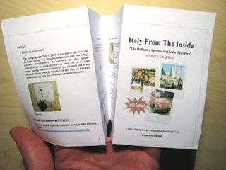

{kind=link}

If you travel to Italy from the US, you may find it hard at first to understand the Italian units and conversion systems. As we cover this topic extensively in our eBook, we decided to make it simple for you to carry along this information by extracting the entire chapter and make it available in a new, practical and curious format: a paper PocketMod. PocketMods are tiny 8-page booklets that fold together from a single letter size sheet of paper. You can print one on your printer, fold it together, and carry it around, in your pocket. Here is how this works: - Download our Units & Conversions chapter in PocketMod format (320K - PDF) - Print the document in high resolution (possibly in colors) - Go to the PocketMod web site, click on Create a PocketMod (top right link) and follow the video instructions on how to fold your paper into a PocketMod (or review the folding diagram) Sometimes it's nice to take a break from the extreme virtualization of information and enjoy once again the good old paper :-)